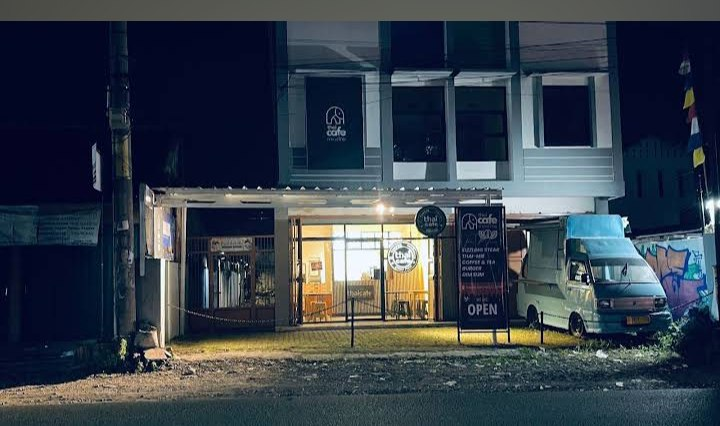

A high-status F&B brand with authentic flavors, an exotic vibe, and a 4.8★ standard. But why are 99% of local customers within 2 kilometers walking right past your front door without knowing you exist? Brand F&B berkelas dengan cita rasa otentik, atmosfer eksotis, dan standar 4.8★. Namun mengapa 99% calon pelanggan lokal dalam radius 2 km lewat begitu saja tanpa menyadari kehadiran kafe Anda?


Building an authentic Southeast Asian dining concept in Sukabumi takes guts and craftsmanship. Your 4.8★ rating proves customers love the food—from Tom Yum to specialty Thai tea, steaks, and dim sum. But in the words of Alex Hormozi: "You can have the best burger in town, but if you don't control the traffic channel, you are leaving your business to luck." Membangun konsep kuliner otentik Asia Tenggara di Sukabumi membutuhkan keberanian dan standar rasa tinggi. Rating 4.8★ membuktikan pengunjung menyukai menunya—mulai dari Tom Yum, Thai tea, steak, hingga dim sum. Namun mengutip Alex Hormozi: "Anda boleh punya burger terbaik di kota, tapi jika Anda tidak menguasai kanal trafiknya, bisnis Anda bertumpu pada keberuntungan."
Customers praise the fast service, affordable price point (Rp15k–Rp40k), and genuine Thai herbs. Culinary excellence is already proven. Pengunjung memuji kecepatan saji, harga terjangkau mahasiswa (Rp15k–Rp40k), dan rempah khas Thailand. Keunggulan produk sudah terbukti.
Positioned right beside the Yakult warehouse and 2 minutes from Universitas Nusa Putra. Thousands of hungry vehicles pass daily. Terletak persis di samping gudang Yakult dan hanya 2 menit dari Universitas Nusa Putra. Ribuan kendaraan lapar melintas setiap hari.
Despite hundreds of monthly diners, Google Maps shows only 13 lifetime reviews. A massive blindspot strangling your local discovery engine. Meskipun melayani ratusan pengunjung tiap bulan, Google Maps hanya mencatat 13 ulasan seumur hidup. Titik buta besar yang mencekik mesin penemuan lokal Anda.
A healthy neighborhood cafe serves 40 to 100 diners every day. Over a year, that is 15,000 to 35,000 satisfied meals. Yet your Google Maps listing has sat at just 13 reviews for months. Kafe yang sehat melayani 40 hingga 100 pengunjung setiap hari. Dalam setahun, itu setara 15.000 sampai 35.000 transaksi makan puas. Namun listing Google Maps Anda tertahan di angka 13 ulasan selama berbulan-bulan.
If you only capture 10 reviews/day: In 30 days you have 300 reviews. In 6 months you have 1,800+ reviews, permanently cementing Thai Cafe as the undisputed #1 highest-rated Asian restaurant in Sukabumi. Jika Anda menangkap 10 ulasan/hari saja: Dalam 30 hari Anda punya 300 ulasan. Dalam 6 bulan terkumpul 1.800+ ulasan, mengunci posisi Thai Cafe sebagai resto Asia nomor satu di Sukabumi.
Your Instagram page (@thaicafe_indonesia) is sharp. But if you stop 100 people 1.5 km away—at Nusa Putra University, Cisaat Market, or the office workers along Jl. Raya Cibolang—and ask: "Where is Thai Cafe located?"... how many know the exact door? Tampilan Instagram Anda (@thaicafe_indonesia) sangat menarik. Namun jika Anda menghentikan 100 orang di radius 1.5 km—di kampus Nusa Putra, Pasar Cisaat, atau karyawan di sepanjang Jl. Raya Cibolang—dan bertanya: "Di mana lokasi Thai Cafe?"... berapa banyak yang benar-benar tahu pintunya?
Pull out your smartphone right now. Search "cafe di Sukabumi" or "cafe di Cisaat". Notice who dominates the top 3 spots. Those cafes are not serving better Tom Yum or Thai Tea than you—they simply have more Google reviews and active profile signals. Buka smartphone Anda sekarang juga. Ketik "cafe di Sukabumi" atau "cafe di Cisaat". Perhatikan siapa yang menguasai 3 besar. Mereka bukan menyajikan Tom Yum atau Thai Tea yang lebih enak dari Anda—mereka hanya memiliki lebih banyak ulasan dan sinyal profil yang aktif.
In business, there are no neutral decisions. Knowing your customer acquisition funnel is leaking and choosing not to act is still an active decision—it is deciding to donate your local market share to nearby cafes. Dalam bisnis, tidak ada keputusan yang netral. Mengetahui bahwa keran pelanggan bocor dan memilih diam tetaplah sebuah tindakan aktif—yaitu memutuskan untuk menyumbangkan pangsa pasar Anda ke kafe pesaing.
Rely solely on sporadic Instagram posts. Let 50+ daily customers walk out the door with zero review footprint. Watch Google Maps stay frozen at 13 reviews while nearby cafes pass you. Hanya mengandalkan postingan Instagram acak. Membiarkan 50+ tamu harian keluar tanpa jejak ulasan. Melihat Google Maps stagnan di 13 ulasan sementara kafe lain menyalip.
Deploy NeuralKats Smart NFC Review stands on your cash counter and tables. Turn every satisfied meal into an effortless 5-star Google review in 2 seconds flat. Pasang stand pintar NFC NeuralKats di meja kasir dan meja makan. Ubah setiap senyum kepuasan tamu menjadi ulasan bintang 5 Google dalam 2 detik saja.
Why don't diners leave Google reviews today? Friction. Typing the name, opening the app, finding the review tab takes 60 seconds. Nobody bothers. NeuralKats eliminates 100% of the friction. Mengapa pelanggan jarang meninggalkan ulasan saat ini? Karena ribet. Harus mengetik nama, buka aplikasi, cari tab ulasan butuh 60 detik. Akhirnya malas. NeuralKats menghapus seluruh kerepotan tersebut.
A Google Maps pin tells people where you are. An official website proves who you are. For Thai Cafe, a dedicated web home eliminates 20–30% delivery app commissions and unlocks lucrative campus and corporate catering. Titik Google Maps memberi tahu orang di mana lokasi Anda. Website resmi membuktikan reputasi & kelas brand Anda. Bagi Thai Cafe, website memangkas komisi aplikasi 20–30% dan membuka pasar katering kampus.
A high-speed, mobile-optimized digital storefront already built and deployed live for Thai Cafe by NeuralKats. Portal digital modern yang ringan, cepat dibuka di HP, dan sudah siap pakai dibangun oleh NeuralKats.
Dominating the Google Local 3-Pack for "cafe Sukabumi" or "cafe Cisaat" predictably injects high-intent foot traffic every single day without spending on ads. Let's run the conservative math: Menguasai 3 Besar Google Maps untuk pencarian lokal secara terukur menyuntikkan pelanggan baru setiap hari tanpa bakar uang iklan. Mari kita bedah hitungan konservatifnya:
We don't sell promises; we deliver outcomes. To make this an absolute no-brainer, NeuralKats absorbs 100% of the financial risk. Kami tidak menjual janji kosong; kami memberikan hasil nyata. Untuk menjadikannya keputusan termudah bagi Anda, NeuralKats menanggung 100% risiko finansial.
Custom acrylic stands branded for Thai Cafe, pre-programmed with high-speed dynamic Google Review routing. Stand akrilik elegan berlogo Thai Cafe, diprogram dengan chip NFC cepat langsung ke ulasan Google.
Complete digital portal with HD menu, student discount perks, WhatsApp ordering, and managed hosting included. Portal web lengkap dengan menu HD, promo mahasiswa, order WhatsApp langsung, dan hosting terkelola.
Complete Local SEO audit: Geo-tagged photo metadata, service area keywords, and category precision. Audit SEO Lokal menyeluruh: Metadata geo-tagging Sukabumi, optimasi kata kunci, dan kategori kafe.
If Thai Cafe does not collect at least 100 verified Google reviews in 30 days, you owe us zero. Jika Thai Cafe tidak mendapatkan 100 ulasan positif terverifikasi dalam 30 hari, Anda bayar Rp0.
I live and build technology right here in Sukabumi. Let's install the Smart NFC stand on your counter this week and start capturing your rightful foot traffic today. Saya tinggal dan membangun ekosistem teknologi langsung di Sukabumi. Mari pasang stand Smart NFC di kasir Anda minggu ini dan mulai jemput pelanggan lokal Anda hari ini.